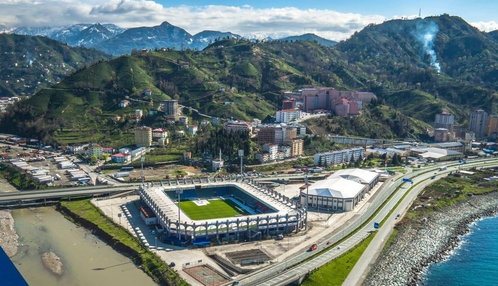

Genel Bilgiler
Çaykur Rizespor, Türkiye'nin Rize ili merkezli futbol kulübü. 19 Mayıs 1953'te kurulan takım, iç saha maçlarını Çaykur Didi Stadyumu'nda oynamaktadır. Renkleri mavi yeşildir. Süper Ligde mücadele etmektedir.
Başarılar
3X TFF 1. Lig Şampiyonluğu (1978-1979, 1984-1985, 2017-2018) , Türkiye Kupası Yarı Final (2002-2003, 2007-2008, 2015-2016)

Çaykur Didi Stadyumu

Takımımızın Forması